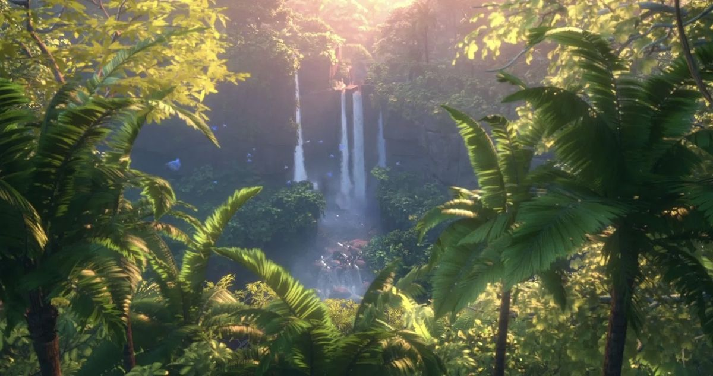
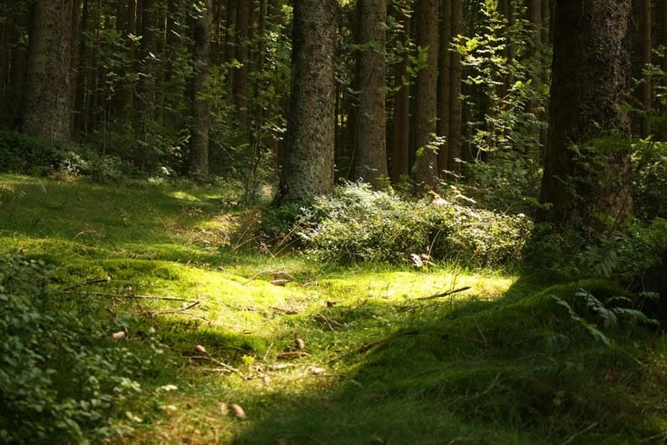
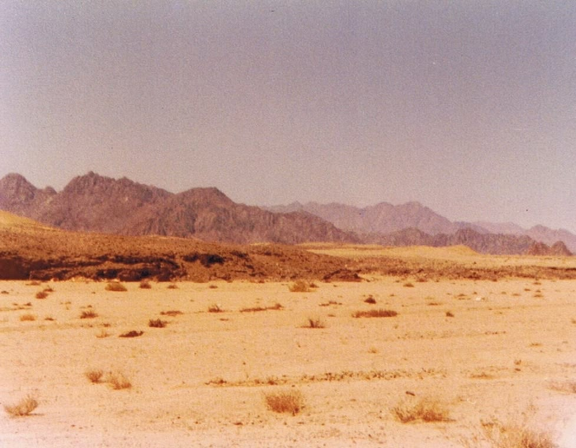
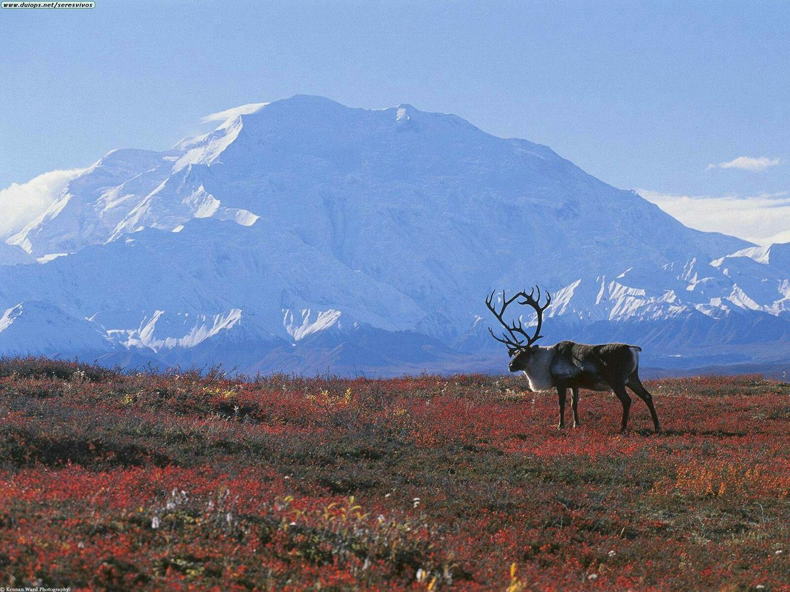
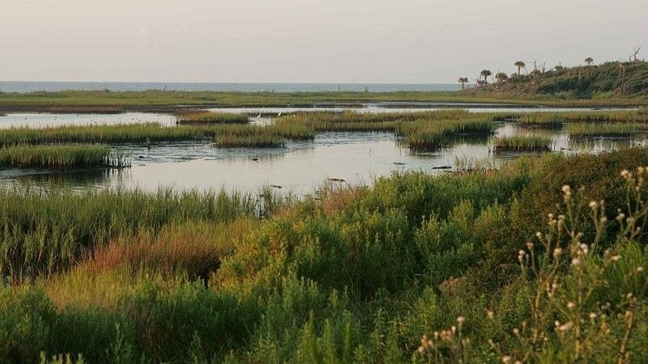

Biomes of the Earth
From humid canopies to windy tundra, every land biome has its own rhythm and each suffers differently when pollution interrupts it.
Tropical Rainforests
"Earth's lungs"

Located near the equator, tropical rainforests thrive with constant warmth and heavy rainfall. The canopies shelter millions of insects, birds, and mammals while holding massive amounts of carbon.
How pollution impacts it
Chemical runoff & mining toxins: Illegal gold mining releases mercury into forest streams, while agricultural pesticides wash into the thin rainforest topsoil. This poisons tree roots, amphibians, and freshwater fish.
More on Soil & Canopy
Because heavy rains constantly wash minerals downward, rainforest soil relies on fast decomposition at the surface. Chemical spills kill the fungi and microbes that keep this cycle alive.
Woodlands & Grasslands
Balanced, rhythmic, seasonal

Experiencing warm summers, crisp autumns/springs, and cold winters, temperate forests and prairies build nutrient-dense soils. Seasonal leaf drop and deep prairie grassroots protect the earth against erosion.
How pollution impacts it
Synthetic fertilizers, acid rain & microplastics: Too much nitrogen fertilizers acidify soil and kill vital earthworms, while plastic mulch and highway runoff put microplastics deep into the topsoil.
More on Soil & Root
Acid rain formed from industrial air emissions pulls calcium and magnesium out of woodland soils, leaving oak and maple trees weakened against disease and drought.
Deserts & Drylands
Extreme masters of water conservation.

Covering over 1/3 of Earth's land surface, deserts endure scorching days and chilly nights. Cacti, deep-rooted shrubs, and living soil crusts hold sand together and hold the limited water.
How Pollution Impacts It
Illegal dumping & oil/industrial waste: Because deserts lack regular rainfall to flush or dilute toxins, spilled petroleum, heavy metals, and windblown plastics remain trapped on the surface for decades.
More on Biological Crust
These crusts are made of cyanobacteria, lichens, and mosses and take decades to grow. Chemical spills and off-road debris crush it, triggering severe dust storms and desertification.
Arctic Tundra
The fragile climate vault

This biome is defined by its bitter winds, short growing seasons, and permanently frozen subsoil (permafrost). It hosts hardy mosses, lichens, and migratory herds adapted to sub-zero survival.
How Pollution Impacts It
Black carbon soot & airborne persistent pollutants: Soot from smokestacks settles onto snow, darkening the surface so it absorbs heat faster. This speeds up permafrost thaw and releases trapped greenhouse gases and heavy metals.
More on Permafrost & Lichen
Lichens absorb nutrients from the air rather than roots, making them really sensitive to sulfur and heavy metals which then pass directly into grazing caribou and reindeer.
Wetlands
Restorative water purifiers.

Marshes, bogs, and mangroves bridge land and water. Although they cover only 3% of Earth's land, peatlands store twice as much carbon as all the world's forests combined while filtering sediment out of freshwater.
How Pollution Impacts It
Sewage overflow, urban runoff & plastic buildup: When overloaded with pollution, wetlands suffer toxic algal blooms that suffocate aquatic roots and turn carbon sinks into methane emitters.
More on Peat & Filtration
Waterlogged peat slows decomposition so dead plants turn into carbon-rich soil over time. Draining or polluting wetlands dries out the peat, making it vulnerable to underground fires.
See Who Lives Here
Explore how land creatures are affected next